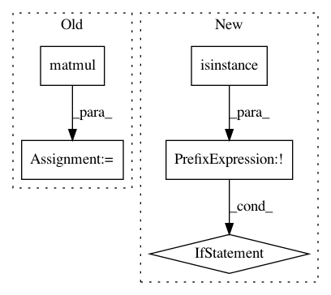

e712d42833a82df3331d1e742ed95b0e7dc235fb,gpytorch/random_variables/gaussian_random_variable.py,GaussianRandomVariable,sample,#GaussianRandomVariable#Any#,49
Before Change
base_samples = Variable(self._mean.data.new(covar_root.size(0), covar_root.size(-1), n_samples).normal_())
else:
base_samples = Variable(self._mean.data.new(covar_root.size(-1), n_samples).normal_())
samples = covar_root.matmul(base_samples)
samples = samples + self._mean.unsqueeze(-1)
return samples
def var(self):
return self._covar.diag()
After Change
def sample(self, n_samples):
covar = self.covar()
if not isinstance(covar, LazyVariable):
covar = NonLazyVariable(covar)
return covar.zero_mean_mvn_samples(n_samples) + self._mean.unsqueeze(-1)
def var(self):
return self._covar.diag()
In pattern: SUPERPATTERN
Frequency: 3
Non-data size: 5
Instances
Project Name: cornellius-gp/gpytorch
Commit Name: e712d42833a82df3331d1e742ed95b0e7dc235fb
Time: 2018-01-31
Author: gpleiss@gmail.com
File Name: gpytorch/random_variables/gaussian_random_variable.py
Class Name: GaussianRandomVariable
Method Name: sample
Project Name: geomstats/geomstats
Commit Name: f0815a6bbb3af21866202175779e7acbb4b1bb1d
Time: 2021-03-24
Author: nicolas.guigui@inria.fr
File Name: geomstats/geometry/symmetric_matrices.py
Class Name: SymmetricMatrices
Method Name: apply_func_to_eigvals
Project Name: arraiy/torchgeometry
Commit Name: a606a68ff74ed2b2e35f7079a1570310655e4e6d
Time: 2019-03-04
Author: edgar.riba@gmail.com
File Name: torchgeometry/core/depth_warper.py
Class Name: DepthWarper
Method Name: compute_projection_matrix